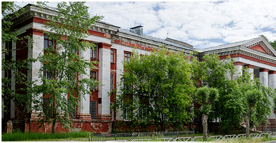
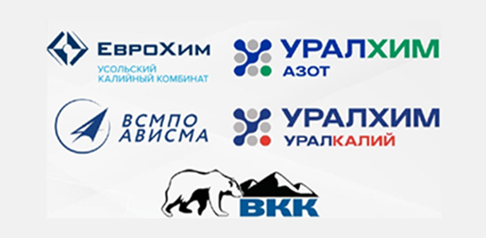
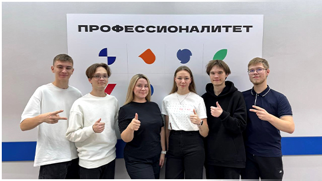

.png)
О ТЕХНИКУМЕ
История нашего техникума интересна, богата и поучительна. Учебное заведение было создано в 1929 году. За время своего существования техникум несколько раз менял свой статус: Березниковский химический техникум, Березниковский химико-технологический техникум, Березниковский химико-механический техникум. Но как бы не звучало название учебного заведения, неизменным оставалось главное: высокий уровень подготовки специалистов, любовь преподавателей и сотрудников к своей работе и творческое отношение к делу.

ПРОФЕССИИ И СПЕЦИАЛЬНОСТИ
Отделение ПССЗ
• Разработка и управление программным обеспечением
• Эксплуатация и обслуживание электрического и электромеханического оборудования
• Монтаж, техническое обслуживание, эксплуатация и ремонт промышленного оборудования
• Техническая эксплуатация и обслуживание роботизированного производства
• Химическая технология производства химических соединений
• Подземная разработка месторождений полезных ископаемых

Отделение ПКРиС
• Электромонтер по ремонту и обслуживанию электрооборудования
• Сварщик (ручной и частично механизированной сварки)
• Мастер слесарных работ
• Слесарь-наладчик контрольно-измерительных приборов и автоматики
• Лаборант по контролю качества сырья, реактивов, промежуточных продуктов
• Аппаратчик – оператор производства химических соединений
• Обогатитель полезных ископаемых
ПРЕДПРИЯТИЯ-ПАРТНЕРЫ

АКТИВНОСТИ
Мы поддерживаем различные молодёжные движения.
На нашем техникуме базируются:
• Студенческие отряды РСО
• Молодёжное движение первых
• Медиацентр
• Амбассадоры
У нас проводятся различные внеурочные мероприятия (проводятся олимпиады, демонстрационные экзамены, конференции), участвуем в городских и региональных мероприятиях.

ПРОФЕССИОНАЛИТЕТ
Профессионалитет — это образовательная программа в колледжах, которая позволит тебе стать высококвалифицированным специалистом на ведущем предприятии твоего региона!
• Актуальная рабочая профессия – в короткий срок
• Учеба по-новому – с упором на практику и IT
• Современные мастерские и высокотехнологичное оборудование
• Стажировки и трудоустройство в ведущие отраслевые компании страны
• Компетентные преподаватели с практическим опытом
• Программы обучения, разработанные совместно с работодателями